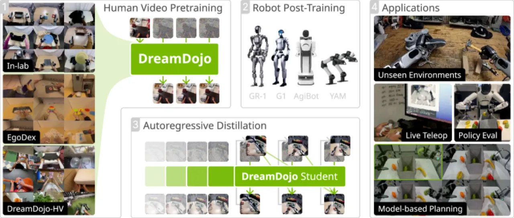
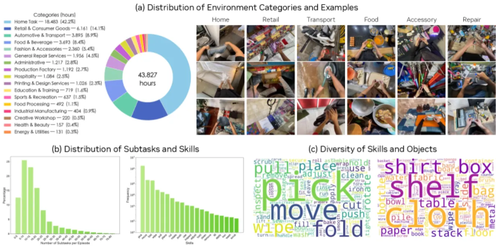
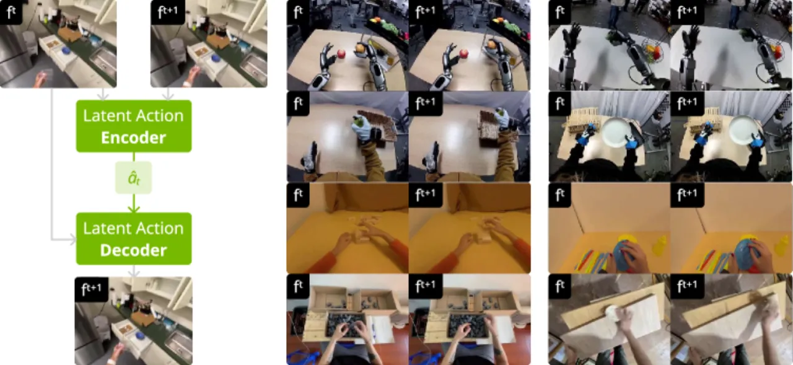
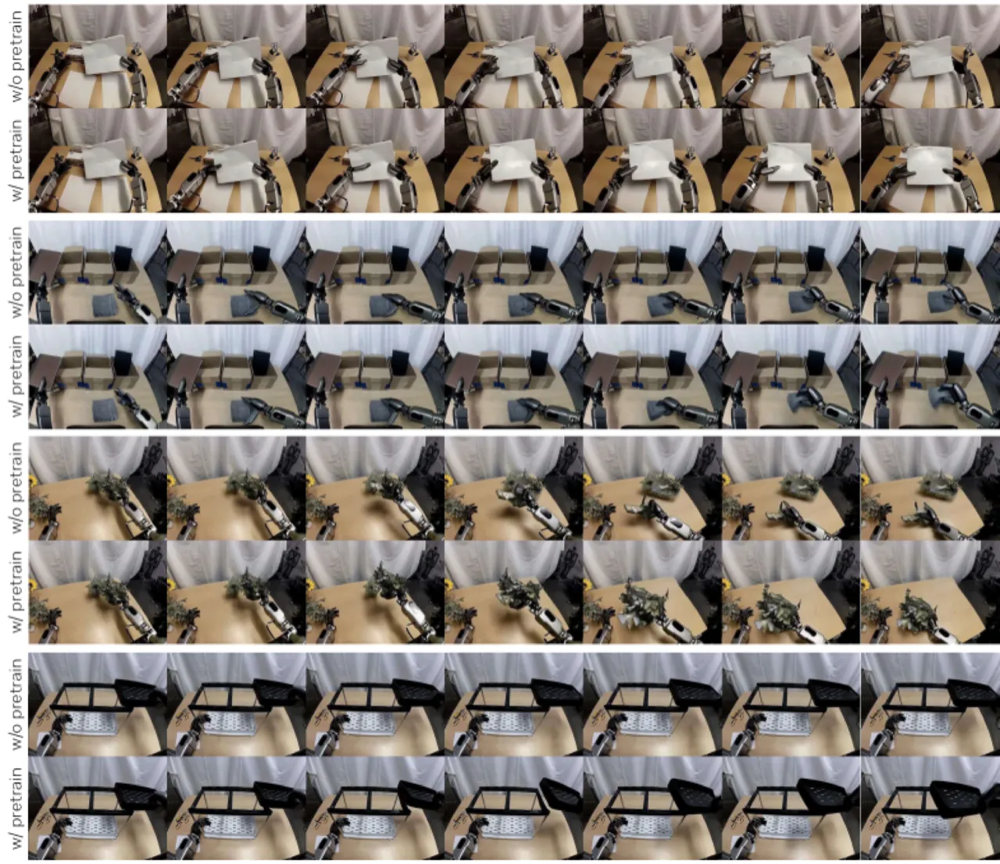
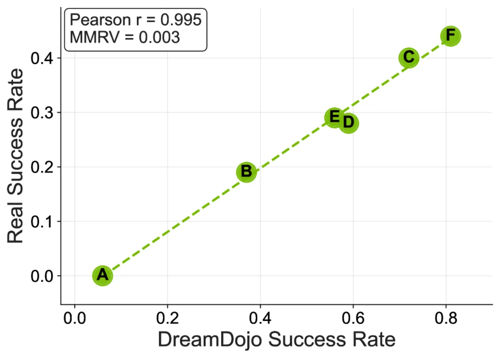

DreamDojo 是首个从 44k 小时以自我为中心（egocentric）人类视频中学习的通用机器人世界模型。通过引入连续潜在动作（continuous latent actions）作为统一的代理标签，解决了机器人操作任务中动作标注稀缺的核心瓶颈，在无需大量机器人数据的情况下实现了精确的动作可控性与物理推理。
机器人操作任务面临两大核心瓶颈：现有世界模型训练数据极度匮乏，而视频中动作标注又极为稀缺。如何从海量无标注的人类日常视频中高效提取交互知识，是构建通用机器人世界模型的关键难题。
"Being able to simulate the outcomes of actions in varied environments will revolutionize the development of generalist agents at scale. However, modeling these world dynamics, especially for dexterous robotics tasks, poses significant challenges due to limited data coverage and scarce action labels."

与已有机器人世界模型数据相比，DreamDojo 数据集在规模上具有压倒性优势：视频时长长 15×，技能种类多 96×，场景数量多 2,000×。

DreamDojo 以 WAN2.2 视频生成模型为骨干，在其上引入三个关键设计：连续潜在动作（解决无标注问题）、相对动作变换 + 分块注入（提升条件精度），以及时序一致性损失（增强帧间连贯性）。后处理阶段通过两阶段蒸馏管线实现实时推理。
核心挑战：大量以自我为中心的人类视频没有动作标注。DreamDojo 采用基于 VAE 的信息瓶颈设计，从相邻帧对中提取紧凑的潜在动作向量，作为代理标签用于条件视频生成。其训练目标同时最大化下一帧预测的似然并最小化潜在动作的 KL 散度：
ℒpred = 𝔼[log pθ(ft+1|â, ft)] − β · DKL(qφ(â|ft:t+1) ‖ p(â))
该设计还通过跨具身（cross-embodiment）相似帧对检索验证：不同机器人（或人手）执行相似动作时，其潜在动作向量在空间上高度对齐，表明 latent action 捕捉了真正的运动语义，具备具身无关的迁移能力。

直接将动作轨迹全局注入会导致分布宽广、建模困难。DreamDojo 引入两项架构改进：
在标准 flow-matching 目标之外，DreamDojo 额外引入时序一致性损失以匹配帧间过渡：
ℒtemporal = 𝔼[∑ ‖(zi+1 − zi) − (vi+1 − vi)‖²]
蒸馏管线分两阶段（warmup + distribution matching），将 teacher 模型（35 步，2.72 FPS）压缩为 student 模型（4 步，10.81 FPS），实现约 4× 加速，并通过更长的 context 窗口（1 → 12 帧）大幅提升长程一致性。
实验在多个具有挑战性的 OOD（out-of-distribution）基准上评估，包括 In-lab Eval、Counterfactual Eval 和 GR-1 Long Eval，以及三类下游应用：策略评估、基于模型的规划和实时遥操作。
| 设计组合 | PSNR↑ | SSIM↑ | LPIPS↓ |
|---|---|---|---|
| Baseline（无任何改进） | 19.448 | 0.768 | 0.211 |
| + Relative actions | 19.482 | 0.772 | 0.212 |
| + Chunked injection | 20.783 | 0.790 | 0.193 |
| + Temporal loss（完整模型） | 20.980 | 0.796 | 0.189 |
| 方法 | PSNR↑ | SSIM↑ | LPIPS↓ | FPS↑ | 预测长度 | Context 长度 |
|---|---|---|---|---|---|---|
| Teacher（35 步） | 14.086 | 0.442 | 0.412 | 2.72 | 12 帧 | 1 帧 |
| Student（4 步） | 13.146 | 0.379 | 0.485 | 10.81 | 4 帧 | 12 帧 |
Student 在速度和 context 长度上大幅领先 teacher，代价是 PSNR 小幅下降（14.086 → 13.146），在长程生成任务中表现出更好的一致性。


"While DreamDojo demonstrates significant improvements over the baseline, it is by no means perfect when simulating uncommon actions, such as slapping and fast waving."——对于不常见或快速运动，模型生成质量明显下降，反映了训练数据分布对罕见动作的覆盖不足。
"When conducting policy evaluation, the absolute success rates in DreamDojo are often higher than their real counterparts, indicating a limitation in accurately generating nuanced failures."——世界模型倾向于高估策略成功率，对细微失败模式的建模能力有限，影响其作为绝对成功率指标的可靠性。
"Our model does not naturally support multi-view simulation, which is crucial for state-of-the-art policies. Moreover, how to retain the pretrained knowledge as much as possible has not been studied in depth."——单视角输出限制了对依赖多摄像头的先进策略的支持；后训练（post-training）阶段如何保留预训练通用知识亦有待系统研究。未来方向包括更宽泛的动作分布覆盖（如 policy rollouts）以及进一步的推理速度工程优化。